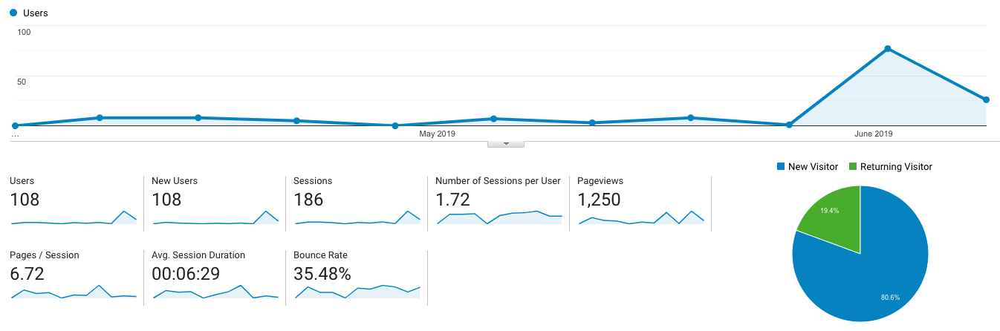
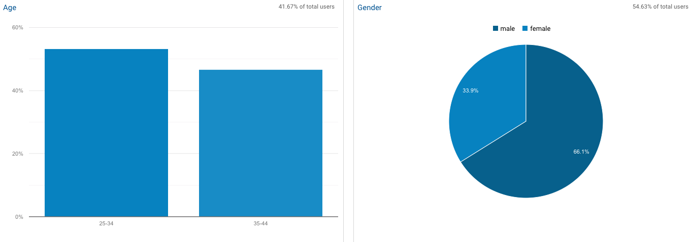
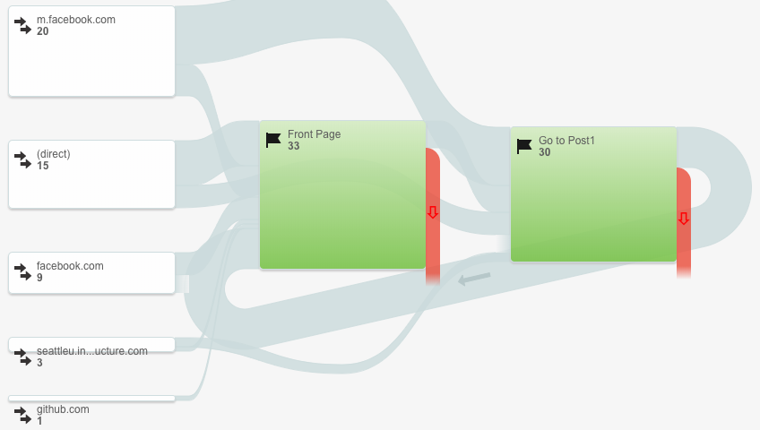
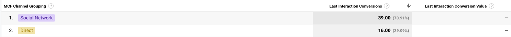
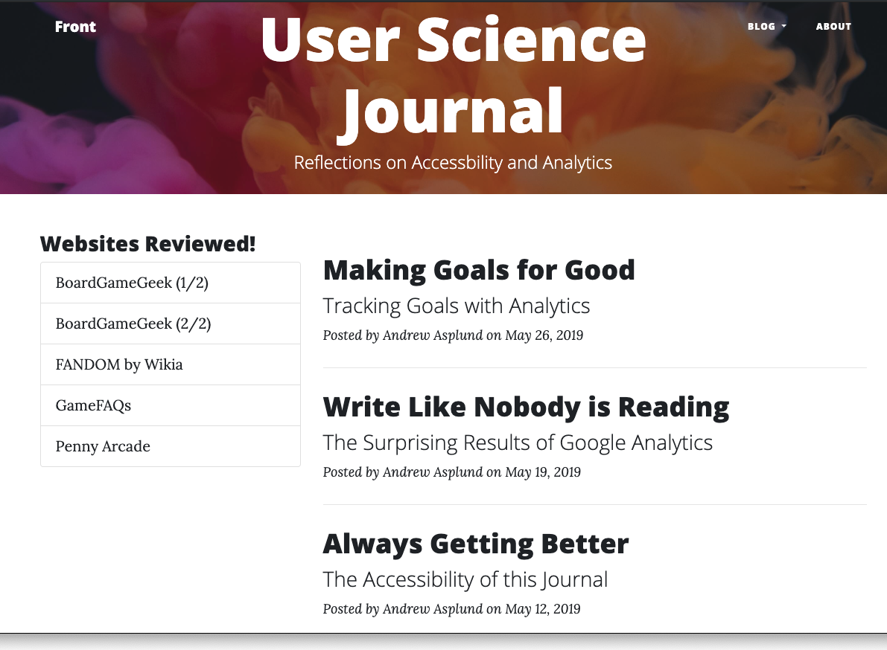

Introduction
Over the last three weeks, I have spent a fair amount of time working with Google Analytics. Although it started with a very basic look at the sort of information that Google Analytics collects, it also included some work with setting up and testing specific goals and even building a basic website experiment. There is a lot to say about what Google Analytics does and what I've learned from working with it. In order to better understand that journey, it's probably best to go through, starting from the beginning.
An Overview of the Data
I have spent several weeks working with the various features of Google Analytics. Initially, I did a survey of the kind of data that it was providing without any specific action on my part (outside of setting it up). Originally, there was not a whole lot to say because very few people (outside of classmates) had even seen the page. As illustrated in the chart below, all of the started to change in the past two to three weeks.
 Analytics data for the site since its creation. The chart shows number of users (over time).The spike in traffic in the last few weeks is not surprising. This is about when I started pushing the link to this website into my social media spaces, specifically to drive traffic. What was surprising was the sorts of information I started receiving once I drove more traffic to the site. What I've learned since the original review was that some of the analyses do not really work without more data to work with. For example, where previously I had found that no demographics data was available, now all of the standard demographic data is being populated.
 Some basic demographic data for the users of this website.As illustrated in the chart above, these graphs are based on a proportion of the overall population of users. This suggests that the algorithms used do some amount of estimation and cannot actually identify every user. Overall, I would conclude that this sort of demographic data is best only as a very inaccurate estimate that is only really effective with large samples.
In addition to basic demographic data, there is some other, more unusual data available related to market interest areas. Google seemed to pull all sorts of information about the interests of some of the visitors to the site, such as areas of (market) interest and one could assume the sorts of websites that they like to frequent. In one section, the results suggested that some proportion of the visitors to my site would be willing to purchase products or services in the following two categories: Employment and Dating Services. The kind of information that Google intuits (or knows) about the users of a website starts to seem a bit creepy. How much does Google actually know about the web users? How much of it is just intuited? And at what point did everybody decide that all of this seemed okay?
Talking About Goals
Google Analytics provides a means to assess what proportion of the user base engages in certain specified tasks, called goals. This was discussed in greater detail in my earlier post. However, it is worth discussing here. I did not get too far into working with goals. It appears that there is a whole lot that you can accomplish with goals insomuch that you can assess how many people are doing certain things on your website. Although it took some effort for me to figure out just how to make a goal work, eventually I was able to semi-effectively assess how many people were visiting the first post (post1.html) through the front page.
 This sort of demonstrates how users enter the site and accomplish the goal. Sort of?Quite honestly, this diagram isn't necessarily the clearest or most easy to understand. If nothing else, I feel like what I've learned about the whole process of creating and tracking goals and funnels is that I don't really quite get all of it that well. As I mentioned in the previous post, I originally set up the goals entirely wrong, yielding zero data for the first five to six days. Even once I had every set correctly, I still can't help but feel like I'm doing it wrong.
Another interesting piece of information that Google was able to provide was the Conversion Rate of the goal that I set broken down by whether they came directly or if they came from a social media website (likely, Facebook). The table below seems to illustrate that users that arrived from social media websites were much more likely to complete the prescribed goal than those that came from a direct link. And that seems exciting! Except... what does that mean? I feel like it would be really easy for a marketing executive to make some bold statement that I would be better off advertising through social media than more direct sources. Of course, this is a bad example because all of the people coming from social media were my Facebook friends while the direct users were more likely coming from class (either Slack or Canvas). As somebody who studied statistics as an undergrad, I cannot help but feel like this is absolutely full of confounding variables that will rarely ever be addressed.
 This feels like a lesson on confounding variables.The most important takeaway for me from working with goals is that they are, at their core, a marketing tool. It really feels like setting and monitoring goals is the way a marketing executive justifies their salary and expenses: "This goal has a 100% conversion rate! We need to do more like this! And you should fund my department more to do it!" Honestly, I'm reminded of a story I heard five years ago about a marketing strategy gone wrong. In that case, it was the website Eat24 discovering that a lot of its paid promotion was getting it attention in countries that the company did not operate in. This isn't the same, but I can't help but feel like "Conversions" and "Abandonment Rate" are not worth nearly as much as Google wants me to think they are. I wonder how many unsuccessful business have had analytics reports with really impressive conversion rates that couldn't effectively sell their product.
Running Experiments with Google
The "featured page" content is big and obvious if not a bit tacky.After learning a bit about goals and funnels, it was time to implement an experiment. The discussion of this can be found in my post from last week. Because I had already made relatively big changes to the site when I implemented my first goal, I thought it would be worthwhile to go back and see if those big changes actually make a difference insomuch that the goal was concerned. To that end, I created a variant of the front page (index.html) that did not have the "featured page" item and put both pages into the Google Analytics Experiment machine.
 This is actually the "test" page since I had already added the extra stuff.By adding the experiment code to the front page of the website, it allows Google to randomly throw users into one of the two pages and then monitor how they behave afterward. In this case, the monitoring is focused on the goal that I had previously created: do users go to the page post1.html after having visited the front page, index.html. The intuitive guess is that a big, obnoxious "featured page" link with stars around it would drive people to investigate that page. Of course, whether or not that intuition is correct is something that hopefully Google Analytics will be able to identify.
To be filled in later when I've actually finished running Experiments.
One of the frustrations that this site generated for me was this idea that Google calls it an "experiment" even though it really lacks the sort of research design and analytical rigor one would normally expect from an actual experiment. And I worry that webmasters (or at least their marketing department) will try to draw assertive conclusions from this kind of experiment that are probably unfounded. Of course, I really do need to keep reminding myself that Google Analytics isn't a sophisticated scientific experiment. Unfortunately, I can imagine that this won't stop people from drawing conclusions and making important decisions based on these sorts of analyses.
Conclusions
Google Analytics is an impressive piece of "software as service" that can provide a lot of information to the operator of a website. It provides a vast amount of data about the users of your website, how they visit your website, and what they do while they are using your website. It all seems pretty impressive, although (as I mentioned previously), it creates certain challenges and concerns. At its heart, Google Analytics is a marketing tool. The majority of its features are designed for marketing people to generate data that shows the efficacy of certain marketing decisions. Whether you conclude that users of your website would be likely to purchase a dating service or you conclude that users that come from social media websites are more likely to purchase products, all of it is built on marketing science. And that presumes that, as a user, you have adopted and accept the principles of marketing science.
But what if you don't accept marketing science? Well, then, Google Analytics still has some really neat features. They're just not as expansive and, from what I've experienced, you have to be a lot more thoughtful about what you're trying to determine and how you're trying to determine it. I come away from my time with Google Analytics feeling like I should learn more about how it works because there are probably a lot of neat tools available. My experiment was extremely basic and only tested whether a big, obnoxious "featured page" section would attract attention to a specific page. That sort of thing can be really useful for usability studies. But, as I've said, you need to learn to navigate around all of the marketeering.
Will I implement Google Analytics on my own, personal websites? Probably not, unless I intend to do very specific research with it. But, it is nice to know that it's there for the time when I do.